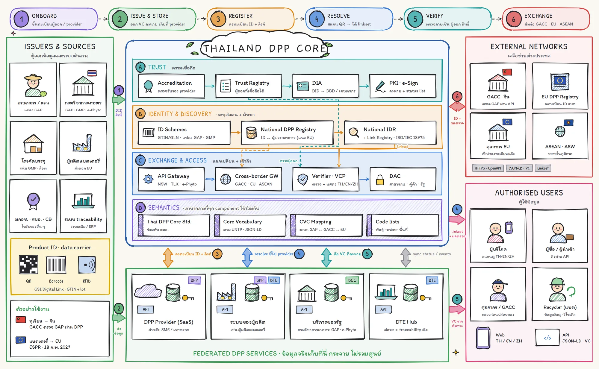
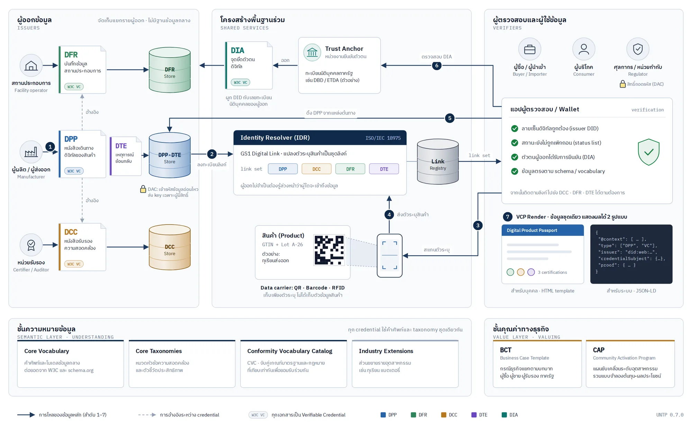
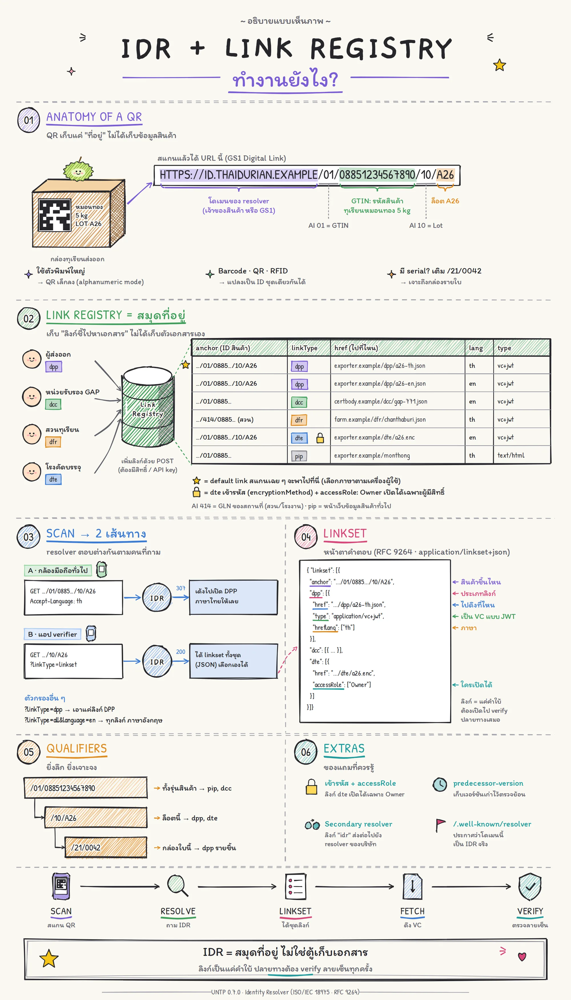
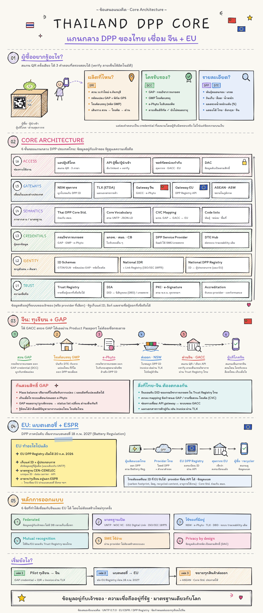
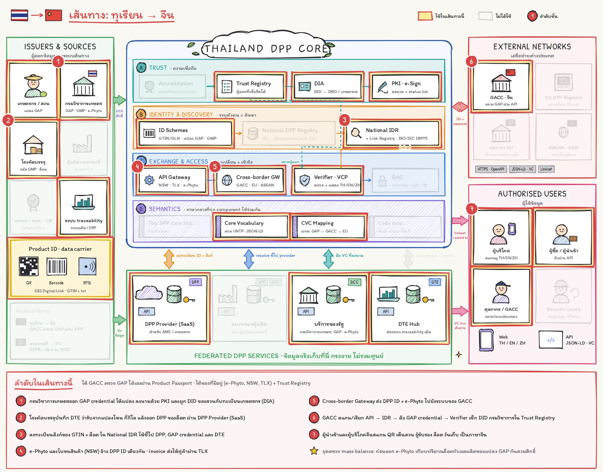
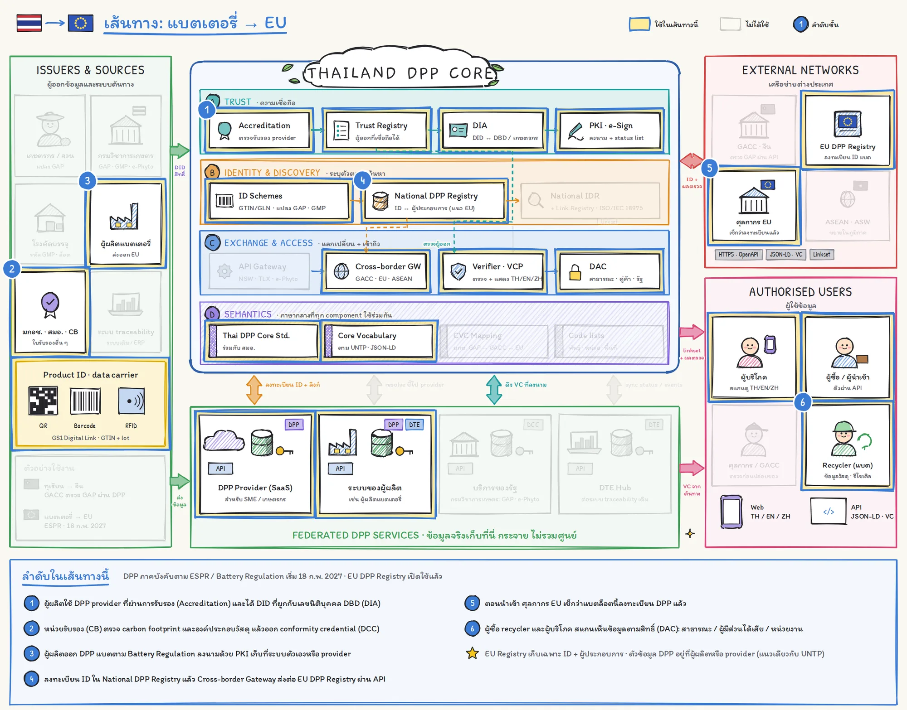
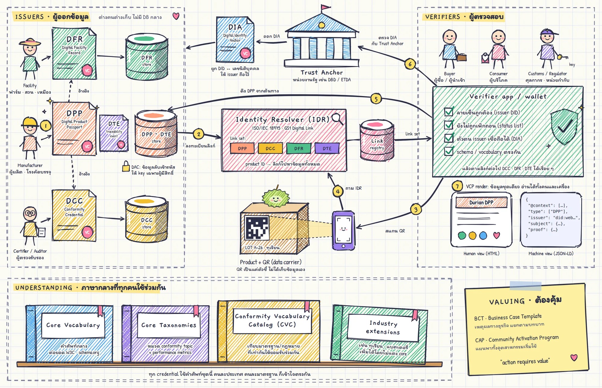

พาสปอร์ตดิจิทัลสำหรับผลิตภัณฑ์ของประเทศไทย
สรุปแนวคิด สถาปัตยกรรม กรณีทุเรียนส่งจีนและแบตเตอรี่ส่ง EU และแผนดำเนินงาน 8 เดือนของโครงการพัฒนาแนวทางการค้าดิจิทัลข้ามพรมแดนและ DPP
DPP คืออะไร
Digital Product Passport คือชุดข้อมูลดิจิทัลที่ผูกกับสินค้า บอกว่าสินค้าผลิตที่ไหน ใครรับรอง และมีรายละเอียดอย่างไร ผู้ซื้อ ผู้บริโภค หรือหน่วยงานกำกับ สแกน QR บนสินค้าแล้วเห็นข้อมูลที่ตรวจสอบได้ว่าออกโดยผู้รับผิดชอบจริง
ผลิตที่ไหน?
สวน แปลง GAP พิกัด โรงคัดบรรจุ เส้นทางสินค้า
ใครรับรอง?
GAP · GMP · e-Phyto · ผลตรวจจากหน่วยรับรอง พร้อมลายเซ็นดิจิทัล
รายละเอียด?
พันธุ์ ล็อต วันเก็บ ผลตรวจคุณภาพ ข้อมูลความยั่งยืน
ทำไมต้องเริ่มตอนนี้
| เมื่อไร | เหตุการณ์ | ผลต่อไทย |
|---|---|---|
| 20 ก.ค. 2026 | EU DPP Registry เปิดใช้งาน เก็บเฉพาะ ID และผู้ประกอบการ ข้อมูลจริงอยู่ที่ผู้ผลิต | ต้องมี ID และ provider ที่ต่อ API กับ EU ได้ |
| 18 ก.พ. 2027 | Battery Passport ภาคบังคับเริ่มสำหรับแบตเตอรี่บางกลุ่ม (ESPR / Battery Regulation) | ตรงกับเดือนที่ 4 ของโครงการ ผู้ผลิตแบตไทยต้องเตรียมตัว |
| ฤดูกาล 2026 | จีนเข้มงวดการตรวจย้อนกลับ มีกรณีข้อร้องเรียนทุเรียนและการสวมสิทธิ์ GAP | ต้องให้ GACC ตรวจ GAP ได้เองจากข้อมูลดิจิทัล |
| ต่อเนื่อง | กรอบ CPTA (ESCAP) ผลักดันการค้าไร้กระดาษข้ามพรมแดน | DPP ต้องเชื่อมกับเอกสารการค้า เช่น invoice ผ่าน TLX |
ภาพรวมแกนกลาง DPP ของไทย

ในเว็บนี้มีอะไร
02 แนวคิดและเทคนิค
UNTP, credential 4 ชนิด, IDR และ link registry, สถาปัตยกรรม 6 ชั้น
03 กรณีทุเรียน + แบตเตอรี่
เส้นทางทีละขั้น และ component ที่แต่ละเส้นทางใช้
04 ขอบเขตงานตาม TOR
วัตถุประสงค์ 5 ข้อ และ 6 ขอบเขตงานหลัก
05 แผนงาน 8 เดือน
Gantt, WBS, สิ่งส่งมอบ, ความเสี่ยง
06 ทีมงานและผู้เกี่ยวข้อง
บทบาททีม, RACI, หน่วยงานไทย–จีน–EU
แนวคิดและสถาปัตยกรรมทางเทคนิค
ใช้ UN Transparency Protocol (UNTP) เป็นกรอบอ้างอิง ข้อมูลแต่ละชิ้นเป็น W3C Verifiable Credential ที่ผู้ออกลงนามเอง เก็บที่ระบบของผู้ออก และค้นหาได้จากตัวระบุบนสินค้า
5 เสาหลักของ UNTP
| เสาหลัก | องค์ประกอบ | หน้าที่ |
|---|---|---|
| Data | DPP DFR DCC DTE | ข้อมูลสินค้า สถานประกอบการ ผลการรับรอง และเหตุการณ์ตรวจสอบย้อนกลับ |
| Finding | IDR VCP | หาข้อมูลจากตัวระบุบนสินค้า (ISO/IEC 18975) แสดงผลได้ทั้งคนและระบบ |
| Securing | VCP DIA DAC | กันการแก้ไข ผูก DID กับตัวตนจริง เข้ารหัสข้อมูลลับเฉพาะผู้มีสิทธิ์ |
| Understanding | Vocabulary Taxonomies CVC | ภาษากลาง และการเทียบมาตรฐาน/กฎหมายที่เท่ากัน |
| Valuing | BCT CAP | กรณีธุรกิจรายบทบาท และแผนขับเคลื่อนระดับอุตสาหกรรม |
Credential 4 ชนิด
DPP Digital Product Passport
ออกโดยผู้ผลิต/ผู้ส่งออก ข้อมูลสินค้า การอ้างสิทธิ์ความสอดคล้อง และลิงก์ไปเอกสารอื่น
DFR Digital Facility Record
ออกโดยสถานประกอบการ เช่น สวน เหมือง โรงงาน พิกัดและข้อมูลระดับสถานที่
DCC Digital Conformity Credential
ออกโดยหน่วยรับรองอิสระหรือหน่วยงานรัฐ เช่น GAP, GMP ผลตรวจ carbon footprint
DTE Digital Traceability Event
บันทึกการแปรรูปหรือเคลื่อนย้ายล็อต เชื่อม input กับ output ตลอดห่วงโซ่
การไหลของข้อมูล 7 ขั้น

- 1ออกและลงนาม ผู้ออกสร้าง credential และลงนามด้วย DID ของตน
- 2จัดเก็บและลงทะเบียนลิงก์ เก็บที่ระบบผู้ออก ลงทะเบียนลิงก์กับ Identity Resolver
- 3สแกน ผู้ใช้สแกน QR, barcode หรือ RFID
- 4Resolve IDR แปลงตัวระบุเป็น link set
- 5ดึงข้อมูล ดึงจากแหล่งต้นทางโดยตรง
- 6ตรวจสอบ ลายเซ็น สถานะเพิกถอน และ DIA จาก Trust Anchor
- 7แสดงผล template สำหรับคน + JSON-LD สำหรับระบบ
Identity Resolver และ Link Registry
QR เก็บเพียง "ที่อยู่" แบบ GS1 Digital Link เช่น …/01/{GTIN}/10/{lot} ส่วน Link Registry เปรียบเหมือนสมุดที่อยู่ เก็บลิงก์ชี้ไปยังเอกสาร ไม่ได้เก็บตัวเอกสาร กล้องมือถือทั่วไปจะถูก redirect (307) ไปหน้า DPP ส่วนแอป verifier ขอ ?linkType=linkset เพื่อได้ลิงก์ทั้งชุดตาม RFC 9264
สิ่งที่ IDR ต้องรองรับ
- Link types:
dppdccdfrdtepip - default link และเลือกภาษาตาม Accept-Language
- qualifier หลายระดับ: รุ่น → ล็อต → รายชิ้น
- accessRole + encryptionMethod สำหรับข้อมูลลับ
- predecessor-version, secondary resolver,
/.well-known/resolver

Thailand DPP Core: 4 กลุ่ม component
A · Trust
Accreditation, Trust Registry, DIA (DID ↔ เลขนิติบุคคล/เกษตรกร), PKI · e-Signature + status list
B · Identity & Discovery
ID Schemes (GTIN/GLN, แปลง GAP, GMP), National DPP Registry, National IDR + Link Registry
C · Exchange & Access
API Gateway (NSW · TLX · e-Phyto), Cross-border Gateway (GACC · EU · ASEAN), Verifier · VCP, DAC
D · Semantics
Thai DPP Core Standard (สมอ.), Core Vocabulary, CVC mapping (มกษ. GAP ↔ GACC ↔ EU), Code lists
ข้อมูลจริงเก็บที่ Federated DPP Services ได้แก่ SaaS สำหรับ SME/เกษตรกร, ระบบของผู้ผลิต, บริการของรัฐ และ DTE Hub ที่ต่อระบบ traceability เดิม
หลักการออกแบบ 6 ข้อ
Federated
ข้อมูลอยู่กับเจ้าของ ไม่มี DB กลางเก็บเนื้อหา
มาตรฐานเปิด
UNTP · W3C VC · GS1 Digital Link · ISO/IEC 18975 เป็นกลางทางเทคโนโลยีตาม TOR
ใช้ของที่มีอยู่
NSW · e-Phyto · TLX · DBD · ระบบ traceability เดิม ไม่เพิ่มภาระบันทึกซ้ำ
Mutual recognition
ให้จีน/EU ยอมรับ Trust Registry ของไทย
SME ใช้ง่าย
ผ่าน provider ไม่ต้องสร้างระบบเอง
Privacy by design
ข้อมูลลับเข้ารหัส เปิดตามสิทธิ์ (DAC)

กรณีทุเรียน → จีน และแบตเตอรี่ → EU
ใช้ Core component ชุดเดียวกัน ต่างกันที่ component ที่เปิดใช้และคู่ค้าปลายทาง ตาม TOR ทุเรียนต้องทดลองกับธุรกรรมจริง ส่วนแบตเตอรี่ทำถึงระดับต้นแบบ
| ทุเรียน → จีน | แบตเตอรี่ → EU | |
|---|---|---|
| แรงผลัก | GACC ต้องการตรวจ GAP และที่มาของล็อต | ESPR / Battery Regulation: Battery Passport 18 ก.พ. 2027 |
| ขอบเขตตาม TOR | As-Is/To-Be, Durian Profile, Prototype, ธุรกรรมจริง + Invoice | Battery Profile, Prototype แสดงวงจรชีวิตและการแบ่งสิทธิ์ ไม่ต้องมีผู้ประกอบการจริง |
| Component หลัก | IDR, Trust Registry, API Gateway (e-Phyto · NSW · TLX), CVC | National DPP Registry, Accreditation, Cross-border GW → EU Registry, DAC |
| ผู้ออกข้อมูลหลัก | กรมวิชาการเกษตร, สวน, โรงคัดบรรจุ | ผู้ผลิตแบต, หน่วยรับรอง (CB) |
| ผู้ตรวจปลายทาง | GACC, ผู้นำเข้า, ผู้บริโภคจีน | ศุลกากร EU, ผู้ซื้อ, recycler |
ทุเรียน → จีน

- 1กรมวิชาการเกษตรออก GAP credential ให้แปลง ลงนามด้วย PKI ผูก DID สวนกับทะเบียนเกษตรกร
- 2โรงคัดบรรจุบันทึก DTE ว่ารับจากแปลงไหน กี่กิโล แล้วออก DPP ของล็อต
- 3ลงทะเบียนลิงก์ GTIN + ล็อต ใน National IDR
- 4e-Phyto และใบขน (NSW) อ้าง DPP ID เดียวกัน · invoice ส่งผ่าน TLX
- 5Cross-border Gateway ส่ง DPP ID + e-Phyto ให้ GACC
- 6GACC สแกน/เรียก API → IDR → ดึง GAP credential → ตรวจ DID กรมวิชาการใน Trust Registry
- 7ผู้นำเข้าและผู้บริโภคจีนสแกนเห็นข้อมูลภาษาจีน
กันสวมสิทธิ์ GAP
- Mass balance: ปริมาณที่โรงคัดรับจากแปลง ≤ ผลผลิตที่แปลงผลิตได้
- เตือนก่อนออก e-Phyto
- GAP หมดอายุ/เพิกถอน → status list เปลี่ยน ด่านเห็นทันที
สิ่งที่ไทย–จีนต้องตกลงกัน
- ยอมรับ DID ของกรมวิชาการเกษตรใน Trust Registry ไทย
- Mapping ข้อกำหนด GAP / รายชื่อสวน-โรงคัด (CVC)
- ช่องทาง API gateway ↔ ระบบของ GACC
แบตเตอรี่ → EU

- 1ผู้ผลิตใช้ DPP provider ที่ผ่าน Accreditation และได้ DID ผูกเลขนิติบุคคล (DIA)
- 2CB ตรวจ carbon footprint และวัสดุ ออก DCC
- 3ผู้ผลิตออก DPP แบตตาม Battery Regulation ลงนามด้วย PKI
- 4ลงทะเบียนใน National DPP Registry แล้วส่งต่อ EU DPP Registry ผ่าน API
- 5ศุลกากร EU ตรวจการลงทะเบียนตอนนำเข้า
- 6ผู้ซื้อ recycler ผู้บริโภค เห็นข้อมูลตามสิทธิ์ (DAC)
อาหารรวมถึงทุเรียนอยู่นอกขอบเขต ESPR ไทยจึงเชื่อมกับ EU ผ่านสินค้าอย่างแบตเตอรี่และสิ่งทอ ขั้นที่ 5 (ศุลกากร EU ตรวจการลงทะเบียน) ควรยืนยันกับตัวบท ESPR อีกครั้งก่อนใช้ในเอกสารทางการ

ขอบเขตงานตาม TOR
โครงการพัฒนาแนวทางการค้าดิจิทัลข้ามพรมแดนและพาสปอร์ตดิจิทัลสำหรับผลิตภัณฑ์ (DPP) จัดทำโดย สพธอ. ลงวันที่ 24 ก.ย. 2569 มี 6 ขอบเขตงานหลัก (4.2–4.7) และงานสนับสนุน 2 ส่วน (4.1 และ 4.8)
วัตถุประสงค์ 5 ข้อ
- 1ศึกษาแนวโน้ม กฎระเบียบ มาตรฐาน ระบบนิเวศ ช่องว่าง และจัดทำ Implementation Roadmap
- 2กำหนดโครงสร้างข้อมูล องค์ประกอบทางเทคนิค และมาตรฐานกลาง DPP ที่ interoperable
- 3ออกแบบกระบวนการค้าดิจิทัลข้ามพรมแดน End-to-End เชื่อม DPP กับเอกสารการค้า (ทุเรียน → จีน)
- 4พัฒนาและทดสอบระบบต้นแบบ End-to-End
- 5นำร่องกับธุรกรรมการค้าข้ามพรมแดนจริง ประเมินผล และเสนอแนวทางขยายผล
6 ขอบเขตงานหลัก
งานสนับสนุน
การบริหารและดำเนินโครงการ
- Inception Report: Project Plan, Methodology, Work Plan, Stakeholder Engagement Plan, แผนลงพื้นที่ไทย–จีน, แผนความเสี่ยง, โครงสร้างทีม
- บริหารประชุม Workshop, Focus Group, Roundtable พร้อมล่าม ไทย–จีน / อังกฤษ–จีน
- ประสานผู้มีส่วนได้ส่วนเสียไทยและจีน มีบุคลากรสื่อสารภาษาจีนตลอดโครงการ
- รายงานความก้าวหน้า ปัญหา ความเสี่ยง ประเด็นที่ต้องตัดสินใจ
- บุคลากรขั้นต่ำ: PM, PMO/Coordinator ≥ 1, ผู้ประสานงานภาษาจีน
สรุปผลและเผยแพร่
- Final Report รวมผลทุกขอบเขตงาน + Implementation Roadmap ฉบับสมบูรณ์
- ข้อเสนอเชิงนโยบายและการขยายผล
- Executive Summary ไทย/อังกฤษ และ Presentation
- ไฟล์ PDF พร้อม Bookmark และไฟล์ต้นฉบับ
- กิจกรรมเผยแพร่ เช่น Roundtable สัมมนา Knowledge Sharing
TOR ฉบับนี้ยังเว้นว่างหัวข้อวงเงิน ระยะเวลา สิ่งส่งมอบ และเงื่อนไขการจ่ายเงิน รวมถึงระยะเวลาดูแล Cloud หลังจบโครงการ ([ระบุภายหลัง]) แผนในหน้าถัดไปจึงเป็นข้อเสนอ ค่าปรับล่าช้า 0.10% ต่อวันของราคางาน ขั้นต่ำ 100 บาท/วัน
แผนงาน 8 เดือน: พ.ย. 2569 – มิ.ย. 2570
จัดลำดับให้การทดลองธุรกรรมทุเรียนจริงตรงกับช่วงทุเรียนภาคตะวันออกออกมาก (ประมาณ เม.ย.–พ.ค.) และให้ Battery Profile เสร็จใกล้วันบังคับใช้ Battery Passport ของ EU (18 ก.พ. 2027)
◆ = เหตุการณ์หรือสิ่งส่งมอบ · เส้นประสีน้ำเงิน = 18 ก.พ. 2027 Battery Passport EU
สิ่งส่งมอบที่เสนอ
| งวด | ส่งมอบ | เนื้อหา | ขอบเขต |
|---|---|---|---|
| D1 | สิ้น พ.ย. 69 (M1) | Inception Report: Project Plan, Methodology, Work Plan, Stakeholder Engagement Plan, แผนลงพื้นที่ไทย–จีน, Risk Plan, โครงสร้างทีม | 4.1 |
| D2 | สิ้น ม.ค. 70 (M3) | Interim 1: Landscape, Stakeholder Map, ผลสัมภาษณ์ ≥ 20 ราย, Focus Group, Gap Analysis, Thailand DPP Reference Architecture, Roadmap ฉบับตั้งต้น, Supply Chain Map, Document & Data Inventory, As-Is | 4.2, 4.3 |
| D3 | สิ้น มี.ค. 70 (M5) | Interim 2: Pain Point, Value Proposition, To-Be, Cross-Border Data Exchange Requirements, DPP–Invoice linking, Core Data Model + Data Dictionary, Durian/Battery Profile, Technical Components + OpenAPI, ผลรับฟังความคิดเห็น | 4.3, 4.4 |
| D4 | สิ้น พ.ค. 70 (M7) | Interim 3: ร่าง Thailand DPP Core Standard + Standards Mapping + Conformance Checklist/Test Cases + ผลรับฟัง, Prototype ที่ทดสอบแล้ว, แผนและผลธุรกรรมจริง | 4.5, 4.6, 4.7 |
| D5 | สิ้น มิ.ย. 70 (M8) | Final: Final Report, Roadmap ฉบับสมบูรณ์, Executive Summary TH/EN, Presentation, Submission Package สมอ., Source code + เอกสารระบบ + คู่มือ + ถ่ายทอดความรู้, ผลประเมินนำร่อง, กิจกรรมเผยแพร่ | 4.5–4.8 |
รายละเอียดกิจกรรม (WBS)
| รหัส | กิจกรรม | ช่วงเวลา | ผลลัพธ์ | ผู้รับผิดชอบหลัก |
|---|
เส้นทางวิกฤตและการพึ่งพา
ลำดับที่ต้องไม่หลุด
- As-Is (M3) → To-Be + Requirements (M4) → Durian Profile (M4) → Prototype (M5–M6) → ธุรกรรมจริง (M6–M7)
- Core Data Model (M4) → ร่างมาตรฐาน (M5–M6) → รับฟัง (M6–M7) → Submission Package (M8)
- ผลธุรกรรมจริง (M7) → ปรับมาตรฐาน + Roadmap ฉบับสมบูรณ์ (M8)
จุดตัดสินใจร่วมกับ ETDA
- M1: อนุมัติ Inception Report ก่อนเริ่มงาน
- M3: เห็นชอบ Reference Architecture และรูปแบบ Repository
- M5: จำนวนและรูปแบบธุรกรรมจริง ผู้ประกอบการที่เข้าร่วม
- M6: รูปแบบกิจกรรมรับฟังร่างมาตรฐาน
- M8: ระยะเวลาดูแล Cloud หลังจบโครงการ
ความเสี่ยงหลัก
| ความเสี่ยง | ผลกระทบ | แนวทางลด |
|---|---|---|
| ฤดูกาลทุเรียน: ลงพื้นที่ช่วง ธ.ค.–ม.ค. นอกฤดู | เห็นกระบวนการจริงไม่ครบ | สัมภาษณ์เชิงลึกก่อน แล้วสังเกตรอบสองช่วงต้นฤดู (มี.ค.) · ใช้ข้อมูลฤดู 2569 จากผู้ส่งออกและ NECTEC |
| ประสานฝั่งจีน (GACC ผู้นำเข้า) | ธุรกรรมจริงไม่ครบถึงปลายทาง | ผู้ประสานงานภาษาจีนตั้งแต่ M1 · หาผู้นำเข้าที่ร่วมมือผ่านผู้ส่งออก · เตรียมแผนสำรองให้ผู้นำเข้าเป็นผู้ยืนยันปลายทาง |
| การเข้าถึงข้อมูลระบบรัฐ (e-Phyto, NSW, ทะเบียน GAP) | ต้นแบบต่อระบบจริงไม่ได้ | ทำหนังสือในนาม สพธอ. เร็ว · ใช้ sandbox หรือข้อมูลจำลองที่มีโครงสร้างเดียวกัน |
| เวลาพัฒนาต้นแบบสั้น (M5–M6) | ไม่พร้อมก่อนธุรกรรมจริง | เริ่มพัฒนา core component (IDR, VC, registry) ขนานกับงานออกแบบ ใช้ open source ที่มีอยู่ |
| ภาระผู้ประกอบการ/เกษตรกร | ไม่ยอมใช้หรือกรอกซ้ำ | ดึงจากระบบเดิม · ให้ provider/SaaS ทำแทน · ออกแบบ To-Be ที่ไม่เพิ่มขั้นตอน |
| กระบวนการ สมอ. | ร่างมาตรฐานไม่ตรงรูปแบบ | หารือ สมอ. ตั้งแต่ M4 · ใช้รูปแบบเอกสารของ สมอ. ตั้งแต่ร่างแรก |
ทีมงานและผู้เกี่ยวข้อง
TOR กำหนดขั้นต่ำ 3 บทบาท (PM, PMO/Coordinator, ผู้ประสานงานภาษาจีน) ตารางด้านล่างเสนอทีมเต็มตามงานทั้ง 6 ขอบเขต
โครงสร้างทีมที่เสนอ
| บทบาท | หน้าที่หลัก | ขอบเขต | ช่วงทำงานหลัก |
|---|---|---|---|
| Project Manager TOR | บริหารภาพรวม คุณภาพ ส่งมอบ ประสาน ETDA | ทั้งหมด | M1–M8 |
| PMO / Project Coordinator TOR | ติดตามแผน นัดหมาย เอกสาร ประชุม รายงานความก้าวหน้า | 4.1, 4.8 | M1–M8 |
| ผู้ประสานงานภาษาจีน / ล่าม TOR | ติดต่อ GACC ผู้นำเข้า ลงพื้นที่จีน แปลเอกสาร TH–CN–EN | 4.1, 4.3, 4.7 | M1–M8 (หนัก M3–M4, M6–M7) |
| Digital Trade / Trade Facilitation Lead | Landscape, CPTA, paperless trade, Roadmap | 4.2, 4.8 | M1–M3, M7–M8 |
| Legal & Regulatory Expert | ESPR, Battery Reg., ข้อกำหนดจีน, พ.ร.บ. ธุรกรรมฯ, data governance | 4.2, 4.3, 4.5 | M1–M3, M5–M7 |
| Business Analyst / Process Designer | Supply chain map, inventory, As-Is/To-Be (BPMN), requirements | 4.3, 4.7 | M2–M4, M6–M7 |
| Durian Supply Chain Expert | สวน ล้ง ส่งออก GAP/GMP e-Phyto ข้อกำหนด GACC | 4.3, 4.4, 4.7 | M2–M7 |
| Battery / EV Expert | Battery Profile, Battery Regulation, ประสาน ENTEC | 4.4, 4.6 | M3–M6 |
| Standards Expert | UNTP, GS1, ISO/IEC 18975, W3C VC, CEN-CENELEC, ประสาน สมอ. | 4.2, 4.4, 4.5 | M2–M8 |
| Data Architect | Core Data Model, Data Dictionary, Sector Profiles, JSON-LD | 4.4, 4.5 | M3–M6 |
| Solution Architect | Reference Architecture, IDR, Repository/API, Security, Interface spec | 4.2, 4.4, 4.6 | M2–M7 |
| Developers (Backend/Frontend) | Core components, Durian/Battery prototype, TH/EN/ZH UI, integration | 4.6, 4.7 | M4–M7 |
| UX/UI Designer | User journey, หน้าจอผู้ประกอบการ/verifier/ผู้บริโภค | 4.6 | M4–M5 |
| QA & Security Tester | System, API, security, conformance testing | 4.6 | M6–M7 |
| DevOps / Cloud | Environment, deployment, handover | 4.6, 4.7 | M5–M8 |
| Event & Workshop Coordinator | Workshop, Focus Group, Roundtable, สัมมนาเผยแพร่ | 4.1, 4.8 | ตามกิจกรรม |
| Technical Writer | รายงาน คู่มือ Executive Summary TH/EN | 4.6, 4.8 | M3, M5, M7–M8 |
RACI ตามขอบเขตงาน
R ทำหลัก · A อนุมัติ · S สนับสนุน · C ให้ความเห็น
| ขอบเขต | ETDA | PM | Trade Lead | BA | Standards | Data Arch. | Solution Arch. | Dev/QA | จีน |
|---|---|---|---|---|---|---|---|---|---|
| 4.2 Landscape & Roadmap | A | S | R | S | S | C | S | – | C |
| 4.3 End-to-End process | A | S | S | R | C | C | C | – | S |
| 4.4 Data & Technical | A | S | C | S | S | R | R | C | C |
| 4.5 Core Standard | A | S | C | C | R | S | S | S | – |
| 4.6 Prototype | A | S | – | S | C | S | R | R | C |
| 4.7 Real transaction | A | R | C | R | – | C | S | S | R |
ผู้มีส่วนได้ส่วนเสีย
ภาครัฐไทย
- สพธอ. (ETDA) เจ้าของโครงการ · TLX
- กรมวิชาการเกษตร: GAP, GMP, e-Phyto
- มกอช.: มาตรฐานสินค้าเกษตร
- สมอ.: รับร่างมาตรฐาน
- กรมศุลกากร: NSW
- กรมพัฒนาธุรกิจการค้า: ทะเบียนนิติบุคคล
- กระทรวงพาณิชย์ / DITP
เทคนิค วิจัย และมาตรฐาน
- NECTEC: ระบบ traceability ทุเรียน
- GS1 Thailand: GTIN/GLN, Digital Link
- ENTEC: กรณีแบตเตอรี่
- ผู้ให้บริการระบบ/SaaS
- UNECE (UNTP), ESCAP (CPTA)
ภาคเอกชนไทย
- เกษตรกร/สวน จันทบุรี ระยอง
- ล้ง/โรงคัดบรรจุ
- ผู้ส่งออกทุเรียน
- โลจิสติกส์ ผู้ขนส่ง
- ผู้ผลิตแบตเตอรี่ / สมาคม EV
จีน
- GACC / ด่านนำเข้า
- ผู้นำเข้า ผู้กระจายสินค้า
- ผู้ให้บริการระบบฝั่งจีน
สหภาพยุโรป (อ้างอิง)
- EU DPP Registry
- CEN-CENELEC standards
- ผู้นำเข้า/ผู้ซื้อแบตเตอรี่
รอบการประชุม
- ทีมภายใน: ทุกสัปดาห์
- ETDA: ทุก 2 สัปดาห์
- รายงานความก้าวหน้า: รายเดือน
- คณะทำงาน/กรรมการ: ตามงวดส่งมอบ
กิจกรรมที่ต้องใช้ผู้มีส่วนได้ส่วนเสีย
| เดือน | กิจกรรม | ผู้เข้าร่วมหลัก |
|---|---|---|
| M1–M3 | สัมภาษณ์เชิงลึก ≥ 20 ราย/หน่วยงาน | นโยบาย กำกับ มาตรฐาน วิจัย เอกชน โลจิสติกส์ |
| M2–M3 | ลงพื้นที่จันทบุรี/ระยอง | สวน ล้ง ผู้ส่งออก โลจิสติกส์ กรมวิชาการเกษตร |
| M3 | Focus Group/Workshop ≥ 1 ครั้ง (Landscape, Gap, Ref. Arch.) + รับฟัง As-Is | นโยบาย กฎหมาย มาตรฐาน กลุ่มที่ได้รับผลกระทบ |
| M3–M4 | ลงพื้นที่จีนร่วมกับ สพธอ. | GACC ผู้นำเข้า ผู้กระจายสินค้า |
| M4 | รับฟัง To-Be, Value Proposition, Requirements | ผู้ส่งออก หน่วยงานรัฐ TLX NSW |
| M5 | ทบทวน Core Data Model, Profiles, Technical Components | ผู้เชี่ยวชาญ ENTEC NECTEC GS1 |
| M6–M7 | รับฟังร่างมาตรฐาน · อบรมผู้ใช้ก่อนธุรกรรมจริง | สมอ. ภาครัฐ เอกชน · ผู้ส่งออก ผู้นำเข้าจีน |
| M8 | Roundtable / สัมมนาเผยแพร่ผล | ผู้บริหาร หน่วยงานไทยและต่างประเทศ |